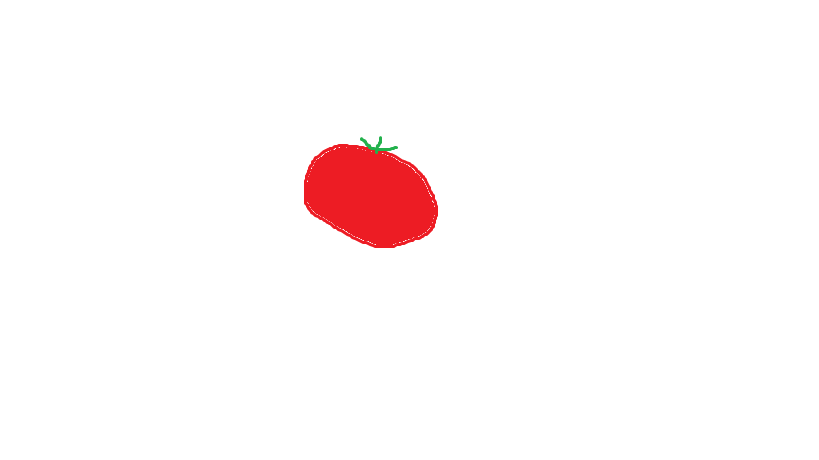
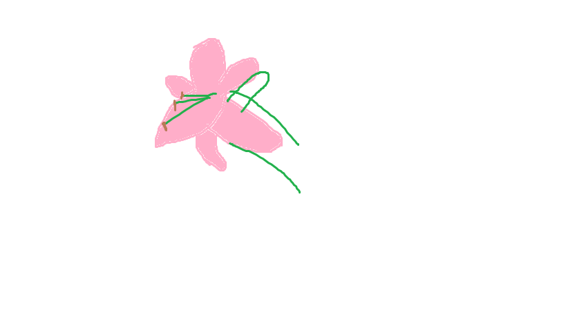
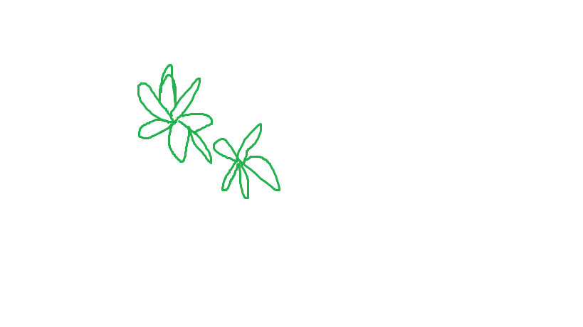

Top 10 plants For Your Garden!
Number 1: Tomato
These juicy plants are easy to grow.
Number 2: Bell pepper
These plants are very popular to all the gardeners. Who doesn't like growing vegetables at home.
Number 3:Roses
Make sure you stop by and smell these. These beautiful flowers look stunning in the garden. Now, you can give flowers to love ones for free!

Number 4: Lily Flowers
Lily's are your second best option of flowers in your garden. They're more cost effeciant and require less work!
Number 5: Basil
We always make sure to grow basil in my our garden. Basil is easy to grow and great for beginners.
Number 6: Cucumbers
Grow a healthy snack and see your plants grow at the same time with cucumbers!
Number 7: Tulips
Tulips come in all different shapes and sizes, grow some and find a world of color in your backyard.
Number 8: Carnation
What in Carnation? These flowers will have you flipping out on how amazing they look! Not to mention, they're beyond easy to grow.

Number 9: Orchid
A close second to Carnations, with just a little more pazzazz!
Number 10: Salvia
Never heard of the Salvia before? Stop by our garden to get a sneak peak of this wonderful plant. Or, grow it yourself!